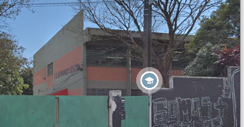

A rede escolar pública registrou, em 2014, 3964 matrículas para a educação infantil, 5096 no ensino fundamental 4.856 para o ensino médio. São 24 Escolas de Educação Infantil, 11 de Ensino Fundamental, uma Escola de Educação de Jovens e Adultos e 14 escolas de Ensino Médio. Na rede municipal, são aproximadamente 400 professores.
As principais e mais destacáveis escolas do bairro são: Dr Nelson Manzanares, Armando Sestini e Capitão Alberto Graf.

